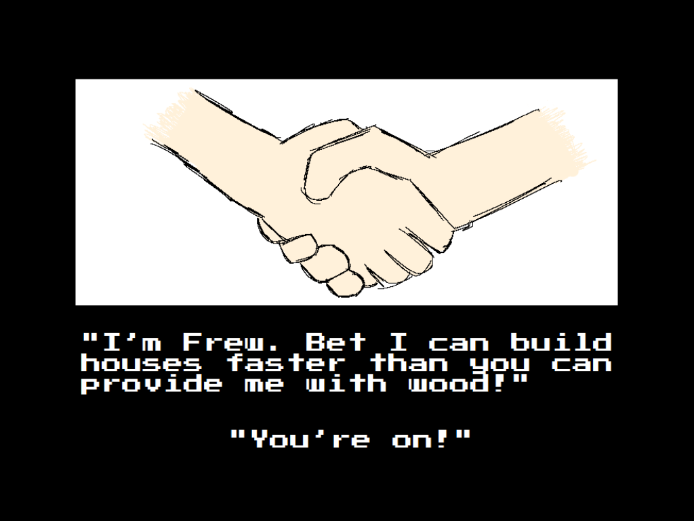
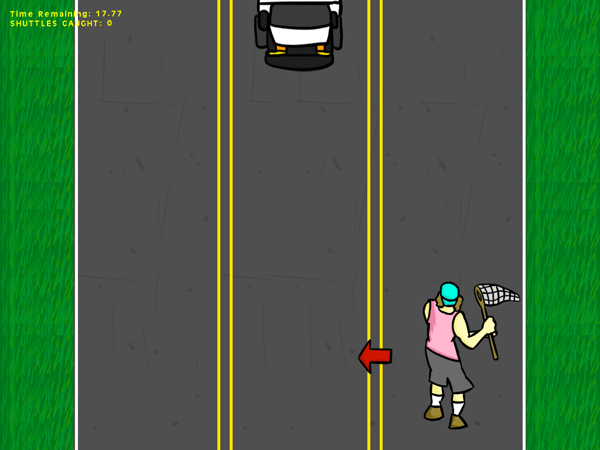
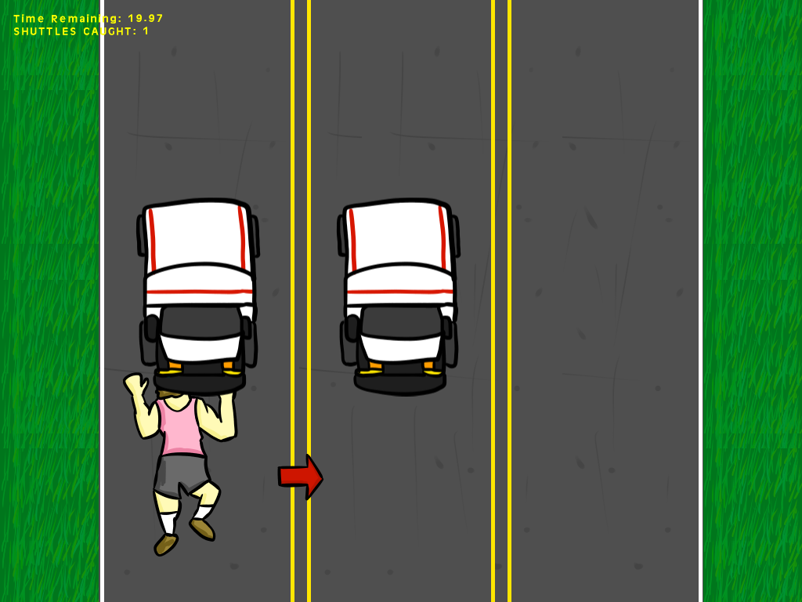

A car crash. A lonely house. An aching soul. Grief is a first-person exploration game designed by a team of five for RPI's Experimental Game Design in two weeks. The player controls a blind individual, struggling with the five stages of grief after a sudden loss. The player can reach out and touch his environment, revealing the layout of his home and uncovering narrative information. I created art assets, designed levels, and was responsible for sound design for the game (including musical composition). The game boasts five levels, unique shaders, a full soundtrack, and level design incorporating non-Euclidian space. The download link can be located [here.]
Grief


Polterheist


Created for RPI's Experimental Game Development 2016, Polterheist is a heist-puzzle game about a supernatural thief performing a heist inside a ghostly robotic tomb. The protagonist, Vilette, can interact with the spirits of the dead, granting her new abilities like invisibility and teleportation. The player must sneak around the mausoleum, evade guards, and use her abilities to navigate the mazelike hallways. The game can be downloaded HERE.
In a Timely Fashion
Created for RPI's Game Development I 2015 with the Unreal Engine in three weeks, In a Timely Fashion is a first-person shooter puzzle game. With the theme of Time Travel, our team wanted to make a more comedic take on the mechanic. Our game tells the story of a cleaning company sent to houses with only seconds remaining, using robot workers armed with state-of-the-art time-traveling technology. The player moves around the stage, shooting "cleaning fluid" at stains, broken appliances, uneven furniture, and other household messes. As the timer runs out at the top of the screen (about 10 seconds), the player picks another point on the map to spawn, and the timer resets. However, the player must take care not to shoot themselves, or bump into a past self while cleaning. The stage can get pretty hectic with 3 or 4 past selves shooting blasts all around you! I made a lot of art for this game in 3 weeks, including animations, models, cutscenes, UI, and other necessities. This is one of the best games I've ever made, and I'm thrilled that it was polished to an enjoyable level. Click HERE to view my asset demo reel of this game The game can be downloaded HERE.
Groundbreaking Reads


Groundbreaking Reads was created in RPI's Game Development I 2015 for the HaxeFlixel engine in two weeks. The game centered around a cult ritual gone wrong by way of an earthquake in the cult's subterranean library. Stranded and alone in the dark, the player must sneak around the library and read the complete banishment spell to send away the prowling demons. The stealth and visibility mechanics of the game were interesting, and the visibility was a bit dark, but I'm very proud of the artwork I made. The GitHub repository can be found HERE.
Knowledge Lab


Made for the RPI Summer Undergraduate Research Project of 2015 under the supervision of Dr. Marc Destefano, Knowledge Lab was an educational game for fourth graders, created with the NYS Common Core curriculum in mind. Knowledge Lab has the player exploring a vast land of robots to recreate hard drive data stolen by a rogue robot. Our team created over 8 educational minigames in Game Maker, along with a number of colorful areas and characters. As Creative Director of the project, I wrote the story and dialogue, designed gameplay mechanics, and created most of the background and environmental art. The website and download links for the game can be found HERE.
Renfrew River


The first game made for RPI's Game Development I 2015, Renfrew River was borne of necessity, namely, a random Wikipedia article assigned to my team about Renfrew, Ontario. Knowing the intensity of a two-week game schedule, we went with a simple idea: a lumberjack floating logs down the Bonnechere River, growing the town as he continues to steer logs into the sawblades. Made with Cocos2D, the game was well recieved and I'm proud of starting the semester with a complete project. The GitHub repository can be found HERE.
Serotonin


Coded and designed by me sophomore year, 2014, Serotonin was a rare one-man project for RPI's GameFest 2015. Players drive a pink convertible down a colorfully lighted highway, grabbing music notes and dodging construction bumpers that spawn to the beat of the music. It was my first foray into independent design and Unity/Maya/C#, and for what it is, I'm proud of it. Unfortunately, due to its use of copyrighted music, I can't distribute the game.
Catch a Shuttle


A game made with Andrew Dunetz for a two-hour game jam in 2016, Catch a Shuttle is a simple, humorous 2D game where you dodge shuttles, to avoid "catching" them with your butterly net. The game's only requirement were that it could be played in 20 seconds. I felt it was a good showing of my ability to make a finished, complete, good-looking game in a short amount of time. The download link can be located HERE.